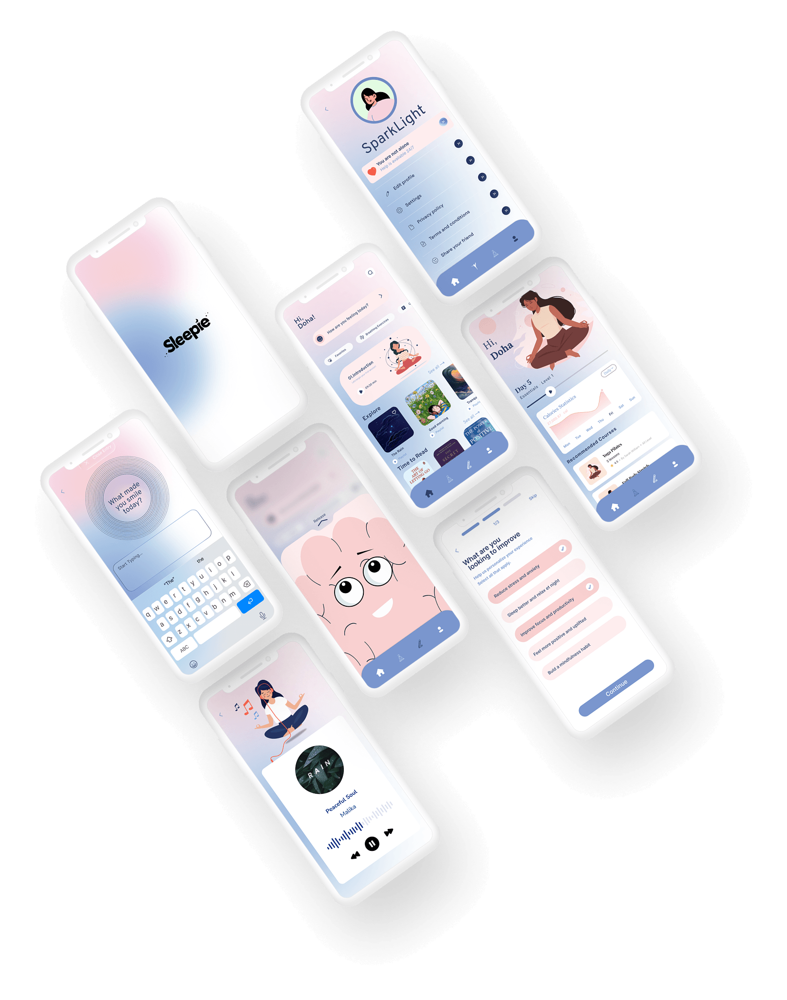

Une application mobile de suivi du sommeil pour les adultes actifs – conçue pour comprendre leurs cycles, réduire l'anxiété nocturne et instaurer des routines saines, sans friction cognitive.
Les apps existantes produisent des métriques sans contexte. L'utilisateur reçoit un score, sans savoir quoi en faire.
Chaque donnée accompagnée d'une cause probable et d'une action concrète, au bon moment, en moins de 5 minutes.
"Je sais que je dors mal. Mais personne ne m'explique pourquoi, ni ce que je peux faire concrètement ce soir."
5 phases menées sur 8 semaines, ancrées dans la réalité terrain de 12 utilisateurs – de l'empathie à la validation.

Un profil central a émergé des 12 entretiens. Camille représente 70 % des participants – cadre active, consciente de ses troubles, mais bloquée par la complexité des solutions disponibles.

6 insights fondamentaux extraits de 12 entretiens, 5 journaux de bord et un audit de 6 concurrents.
En analysant 12 entretiens utilisateurs, 5 journaux de bord et 6 applications concurrentes, six grandes leçons ont émergé. D'abord, le soir le cerveau est épuisé – l'app doit proposer une seule action claire, sans surcharge. Ensuite, un score sans explication est anxiogène : chaque donnée doit être accompagnée d'une cause et d'un conseil concret. Le ton de l'application joue un rôle clé dans la fidélité : 9 utilisateurs sur 12 se sentaient jugés par leurs apps actuelles. Les exercices courts (3 à 5 minutes) sont complétés trois fois plus souvent que les longs. L'écriture libre aide à vider l'esprit avant de dormir, mais dès qu'on lui impose un format, elle perd son effet. Enfin, une notification qui presse est une notification désactivée – la personnalisation est essentielle.
Les wireframes mid-fi ont permis de valider la hiérarchie et les flux avant de plonger dans les détails visuels.


Les maquettes haute-fidélité – l'aboutissement de 8 semaines de recherche, d'itérations et de tests utilisateurs.

5 décisions directement issues des insights – chacune au service d'une expérience plus douce et plus efficace.
Concevoir Sleepie m'a appris que la recherche utilisateur n'est pas une étape – c'est le fondement de chaque décision. Chaque heure passée en entretiens a évité des jours de redesign inutile. J'ai compris que la simplicité est le résultat le plus difficile à atteindre : supprimer un élément demande plus de rigueur qu'en ajouter un. L'émotion, elle, n'est pas un détail esthétique – un ton bienveillant et des micro-interactions douces ont autant d'impact sur la rétention que les fonctionnalités elles-mêmes. Enfin, les tests utilisateurs ont systématiquement invalidé au moins une décision que je croyais évidente. Ce projet m'a appris à douter avec méthode, et à concevoir avec empathie.
.png)